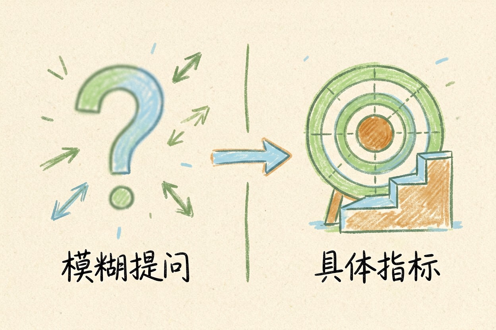
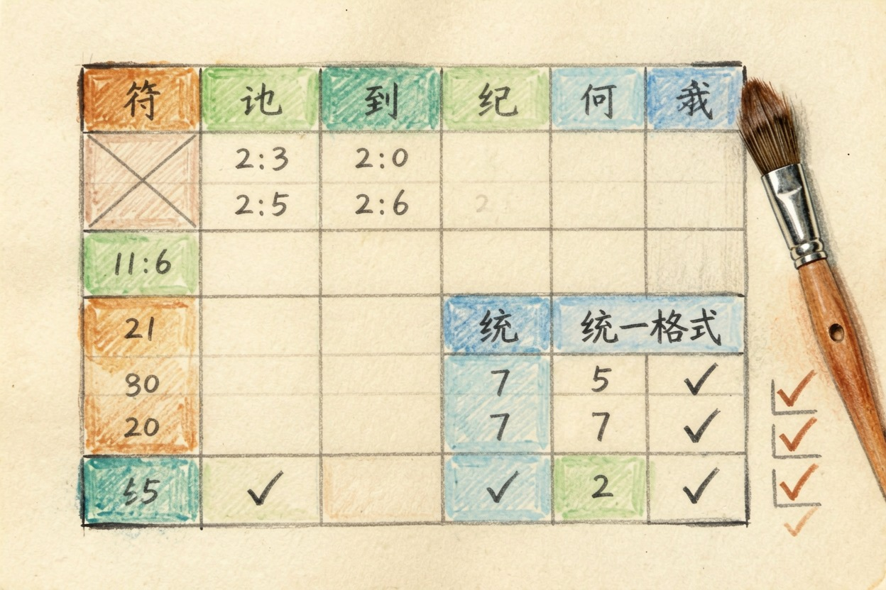

用 AI 做数据分析？从原始表格到能用的结论 — Learntide
表格堆在桌面三天，你真正缺的不是会算的工具，而是先把要回答什么写下来的那两分钟。
ai做数据分析：先想清楚要回答什么

ai做数据分析，第一件事不是打开工具，而是把要回答的问题写下来。问题越具体，模型给的结论越能用。很多人一上来就把整张表丢过去，结果拿到一堆图表，却答不上老板那句「所以呢」。
先把业务问题翻成数据问题。比如「上月哪类客户流失最多」比「帮我看看数据」强太多。你给的范围越窄，模型越不容易胡编。列成清单也行：要算什么指标、按什么维度拆、输出给谁看。
模型的强项是整理和归纳，不是替你做业务判断。它算出「华东退货率最高」，合理解释仍要你拍板。把这一步留给真人，反而更稳。
原始表格先整理成能喂的样子

脏数据会直接带偏结论。上传前先把几件事做掉：表头要唯一、不要合并单元格、同一列单位要一致、空值要么填「无」要么整行删掉。
日期格式也统一。有的写「2026/8/1」，有的写「8月1日」，模型可能当成两批。金额别混着币种。这些一眼能看出的小毛病，先手动清一遍，比事后怀疑结论省事。
如果表特别大，先抽样一百行给模型试跑。它说能处理，再上全量。这一步能挡掉不少格式翻车。
列名也别用缩写。模型看到「amt」「qty」要猜含义，猜错结论就歪。改成「金额」「数量」这种直白写法，沟通成本最低。
一条可直接复制的分析提示词
把表格内容贴进下面这段，按你的字段改括号里的词：
你是一名数据分析助手。请基于以下表格做分析：
【粘贴你的表格，CSV 或 Markdown 均可】
任务：
1 先说明表格包含几列、各自含义，再开始算
2 按「地区」分组，算出每组的销售总额与环比变化
3 找出波动最大的两组，用一句话解释可能原因
4 输出三张表：原样汇总、分组对比、异常清单
5 所有数字标注口径，不要四舍五入掩盖差异跑完别急着复制。先读它给的「口径说明」，确认和你理解的一致。口径对不上，后面的图表再漂亮也没用。
让结论能落地的几个检查
拿到结果做三件事。第一，抽查一个数字，拿计算器或透视表手算一遍，确认模型没算错。第二，看它有没有把异常值当常态，比如某天销量是平时十倍，它有没有单独拎出来。
第三，问一句「如果数据再多点，结论会变吗」。模型有时为了凑整齐，会把样本小的分组也给出强结论。让它标注每组样本量，你才好判断可信度。
把结论写回文档时，顺手附上它用的口径和样本量。下次别人质疑，你不用翻聊天记录。
顺手记一句你当时做的假设。比如「默认退换货不计入销售」，后来的人一看就懂口径从哪来。
常见坑与收尾提醒
最省的用法，是把模型当「第一稿生成器」。它出骨架，你补判断。别让它替你下业务结论，尤其是要花钱或问责的决定。
也别迷信一张图讲完所有事。复杂结论拆成「发生了什么、为什么、怎么办」三块，各自配一张表，读者反而看得快。
给老板看时，先给结论再给图。他没空猜你想说啥，你把关键数字放最前面最省事。
最后一步最该做：让模型把计算过程写给你看。看不懂的地方当场问，别把 ai做数据分析 当成黑盒直接交差。
本文信息核对于 2026-08-08。AI 产品的价格、免费额度与功能变动频繁，实际以各工具官网当前说明为准。